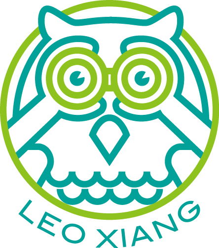

Professional Affiliations
- Artists for Conservation Signature Member
- Guild of Natural Science Illustrators Member
- China Wildlife Conservation Association Member
- Coastal Waterbird Census Group Member

LEO XIANG | Wildlife Art & Nature EducationAwards & Recognition
Leo's work connects artistic practice, scientific illustration, conservation advocacy, and public nature education.